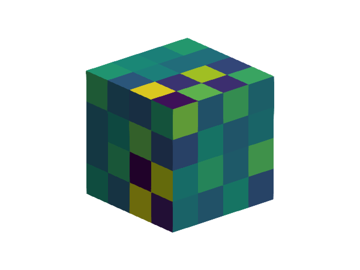

Lagrange multipliers

Problem statement
We solve the same PDE as in the Hello, World! example, but this time using an auxiliary field of Lagrange Multipliers to impose the Dirichlet boundary conditions.
Implementation
using LinearAlgebra
import GalerkinToolkit as GT
import ForwardDiff
import GLMakie as Makie
import LinearSolve
#Geometry
domain = (0,1,0,1,0,1)
cells = (4,4,4)
mesh = GT.cartesian_mesh(domain,cells)
D = GT.num_dims(mesh)
n = GT.unit_normal(mesh,D-1)
Ω = GT.interior(mesh)
Γd = GT.boundary(mesh)
#Functions
∇ = ForwardDiff.gradient
g = GT.analytical_field(sum,Ω)
f = GT.analytical_field(x->0,Ω)
#Interpolation
interpolation_degree = 1
V = GT.lagrange_space(Ω,interpolation_degree)
Q = GT.lagrange_space(Γd,interpolation_degree-1;continuous=false)
VxQ = V × Q
#Integration
integration_degree = 2*interpolation_degree
dΩ = GT.measure(Ω,integration_degree)
dΓd = GT.measure(Γd,integration_degree)
#Weak form
a = ((u,p),(v,q)) -> begin
GT.∫(dΩ) do x
∇(u,x)⋅∇(v,x)
end +
GT.∫(dΓd) do x
(u(x)+p(x))*(v(x)+q(x)) -
u(x)*v(x) -p(x)*q(x)
end
end
l = ((v,q),) -> begin
GT.∫(dΩ) do x
v(x)*f(x)
end +
GT.∫(dΓd) do x
g(x)*q(x)
end
end
#Assemble problem
#and solve it.
p = GT.SciMLBase_LinearProblem(Float64,VxQ,a,l)
sol = LinearSolve.solve(p)
uh,qh = GT.solution_field(VxQ,sol)
#Error check
eh = x -> uh(x) - g(x)
el2 = GT.∫( x->abs2(eh(x)), dΩ) |> sum |> sqrt
@assert el2 < 1.0e-9
#Visualization
#of the multipliers
fig = Makie.Figure()
ax = Makie.Axis3(fig[1,1],aspect=:data)
Makie.hidespines!(ax)
Makie.hidedecorations!(ax)
GT.makie_surfaces!(Γd;color=qh)This page was generated using Literate.jl.